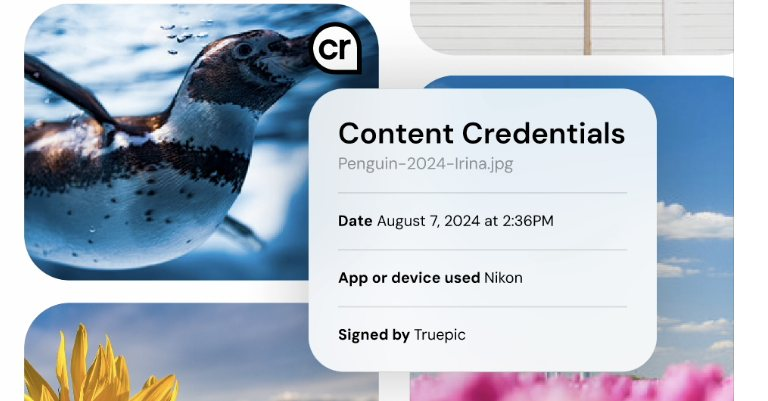
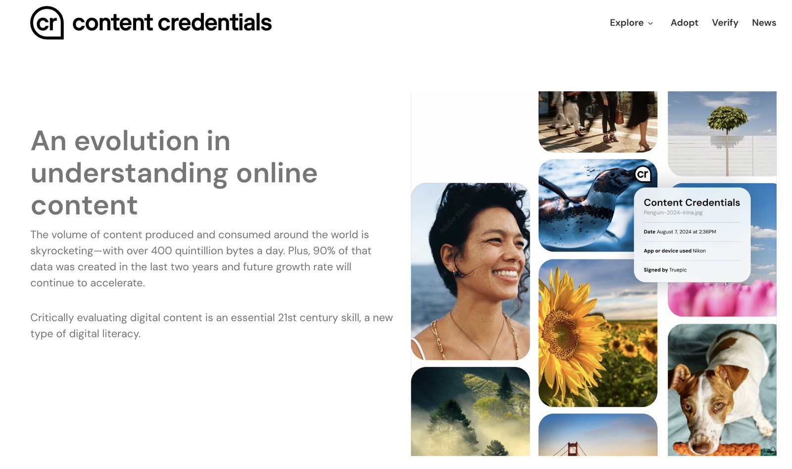

Why text is hard to watermark
The word watermark comes from paper. Hold a banknote to the light and a face appears, pressed into the fibres; the mark is part of the physical object and you cannot copy the note without copying the mark. That is the mental picture most people carry into any conversation about watermarking, and it is the wrong one for plain text. Digital text has no fibres and no substrate. A paragraph is just a sequence of characters, and any character you could hide inside it, an invisible space, a swapped quotation mark, a zero-width joiner, can be stripped out by pasting the text into a plain editor. If a watermark were a hidden character, defeating it would take three seconds.
So the providers did something less obvious. Rather than adding a mark on top of the words, they changed how the words themselves are chosen, so that the mark is carried by the visible text and cannot be removed without rewriting it. Understanding that idea is the whole of this section, and it matters at a university because the same mechanism is now being read, by staff and by software, as if it answered a question it cannot answer: did a person write this.
Two kinds of watermark: files and text
A generated image and a piece of generated text are marked in two completely different ways, and mixing them up is where most of the online confusion starts. Files get a label attached to them. Text gets no label at all; the mark is the writing itself.
How files are marked: signed metadata explained
Every digital photo already carries a label you never see. Take a picture on a phone and the file quietly records the camera model, the date and time, and often the location. That hidden label is called metadata, literally data about the data, and you can read it yourself by right-clicking a photo and choosing Get Info on a Mac or Properties on Windows. The trouble with an ordinary label is that anyone can change it with a free tool in a few seconds, so on its own it proves nothing about where the picture came from.
The C2PA standard, from the Coalition for Content Provenance and Authenticity, adds two things to that label. First, it records more: which app or AI model created the file, what edits were made and with what, in a structured list the standard calls a manifest. Second, and this is the part the word "signed" refers to, it seals the label. The seal is a digital signature: a short code calculated from the exact contents of the file and the label together, using a private key that only the signer holds, whether that is Anthropic, Adobe, a camera maker or a newsroom. Change a single pixel, or a single word in the label, and the code no longer matches, and any checking tool can see that it does not match. Think of the tamper-evident band on a medicine bottle: cheap for anyone to check, obvious when broken, and only the manufacturer can fit an intact one. The checker needs no secret to verify the seal, only the signer's public certificate, which is why the standard is open and anyone can build a reader.
You have probably already seen this system without knowing its name. Content Credentials is the public-facing name for a C2PA label, backed by Adobe, Microsoft, Google, OpenAI, the BBC, Sony and camera makers among others. Its badge is a small "cr" pin in the corner of an image. Click the pin and the label opens: when the picture was taken or generated, which app or device made it, and who signed it.

That fragility is the reason the label is described as designed for cooperative systems: platforms that agree to keep the label and readers that agree to check it. It was never built to withstand someone who wants the mark gone. Anthropic's own help article lists the same losses: format conversion, re-saving and screenshots can all remove the metadata, and a missing label does not mean a file was not made with AI.
How to check a file
Two free tools will read the label for you. The Content Credentials Verify tool, reached from the Verify link on contentcredentials.org, reads any C2PA label, whoever signed it, and shows the same panel as the penguin example above for any file you drop in.

Anthropic's file checker reads only for a Claude credential, runs entirely in your browser, and, in its own words, tells you that Claude "may have made or processed the file", not who authored the underlying content. It reads images, video and audio; it does not read text, because text carries no label.
![The claude.com Check if a file was made with Claude page. Left: 'What the tool does': the tool checks a file for a Content Credential from Claude; if it finds one, that tells you Claude may have made or processed the file; it does not tell you who authored the underlying content and carries no identifying information about the user; the tool does not check text. Right: a drag-and-drop box, 'Check a file', listing supported formats JPG, PNG, GIF, WEBP, TIFF, HEIC, AVIF, SVG, DNG, JXL, MP4, MOV, AVI, WAV, MP3, M4A, FLAC up to 100 MB, and a note that the tool runs in your browser and the file never leaves your device.](exhibit-claude-check-files.webp)
How text is marked: the mark is in the words themselves
The common assumption on developer forums is that AI text watermarking is a bag of formatting tricks: hidden Unicode, zero-width spaces, curly quotes standing in for straight ones. It is a reasonable guess, and it is wrong, for the reason given at the top of the page: anything sitting on top of the text washes out the moment the text is retyped or pasted as plain characters.
If a text watermark were a hidden character or a swapped curly quote, copying the words into a plain-text editor would strip the formatting and destroy it in seconds. That is exactly the test a text watermark has to survive, and it does, because the mark is not sitting on top of the words. It is which words got chosen in the first place. Anthropic describes it the same way: the watermark "will travel with the text when it's copied and pasted elsewhere, and may persist through some editing".
The text watermark is not a layer on top of the words. The mark is the words. When a provider says the mark is woven into the text, it means the mark consists of the actual visible word choices the model made while writing. You cannot remove it without genuinely rewriting the sentences, which is a very different level of effort from running a find-and-replace.
How the text watermark works: green lists, red lists and the z-score
To see how word choices can carry a hidden pattern without turning the writing into nonsense, you have to look at how a language model produces text. It does not plan a paragraph; it predicts one token, usually a word or word fragment, at a time, choosing from a ranked list of likely next tokens. A watermark intercepts that exact moment.
The clearest published account is the scheme by Kirchenbauer and colleagues, presented at ICML in 2023, and it is the version explained on this page. Freeze the moment before the model writes its next word. Suppose the text so far is "the night sky was incredibly". The model has computed probabilities for thousands of possible next words: perhaps dark, clear, beautiful, vast, each a perfectly acceptable continuation. Without a watermark, it samples from that ranked list and continues. With a watermark, a step is inserted first: a pseudo-random generator, seeded by a secret key and by the preceding words, splits the entire vocabulary into a green list and a red list for this one position. The algorithm then nudges the model toward a green-list word. If the model's favourite, dark, is on the red list, it is quietly passed over in favour of the best available green word, say beautiful. A reader sees nothing unusual; the sentence still reads well.
The signal only appears over distance. Across hundreds of words, watermarked text lands on green-list words far more often than chance would produce, because a thumb was on the scale at every step. A detector holding the same secret key can replay the split at each position, count how often the text used a green word, and compare that to the roughly half-and-half a person writing freely would produce. That comparison is expressed as a z-score, a measure of how many standard deviations the green-word count sits above what chance predicts. A z-score near zero looks human; a high z-score says the text follows the provider's pattern.
Think of the party game Taboo: your card says "brain", but the five most obvious words are banned, so you end up saying "the squishy grey computer inside your bone helmet". The sentence still makes sense; it is just steered away from the writer's absolute first choice, over and over, in a pattern only someone holding the same secret key can measure.
Demonstration: watch the watermark build up
Step through the same sentence twice. With the watermark switched off, the model takes its top-ranked word at each step, and the green words fall where they may, so the z-score drifts around zero. Switch the watermark on and the model is pushed onto the green list at each step; the green count climbs and the z-score rises, all while the sentence still reads normally.
Press "Choose next word" to begin. Each word is tinted for the list it landed on: teal for green, red for red.
A worked number gives the scale. Score 300 words with the vocabulary split half and half, and chance predicts about 150 green words. Find 190 and the count sits 4.6 standard deviations above chance. The paper treats anything above a z-score of 4 as detected; an unmarked writer reaches that by chance roughly three times in 100,000. Ten words, as in the demo above, are far too few for a real detector; the mark is a property of long passages.
A high z-score is good evidence that text passed through a watermarking model. It is not a measure of how much of the text the model wrote, it carries no record of the prompt, and it cannot tell generating an essay from scratch apart from fixing the punctuation in one a person wrote. It answers "did this text go through the model", not "who is the author".
The systems in use: Google's SynthID, now also in Claude
The green-list scheme above is the simplest published version of the idea, and the one the playground at the end of this page uses. The system actually in production is Google DeepMind's SynthID-Text, described in Nature in October 2024 and running inside the Gemini app since then. Instead of a single green list, it runs a small elimination "tournament" among the candidate words at each step, with the secret key deciding the winners; the detector then scores how consistently the text follows the key's preferences. The simpler scheme and the production system share the same shape: a secret key nudges word choice during writing, and a detector with the key counts how far the text sits above chance.
On 14 August 2026 Anthropic said that Claude's text mark uses this same SynthID-Text approach rather than a scheme of its own, that the mark is applied to all supported models worldwide, and that it applies globally "because we don't yet have a durable way to scope it by region". The same post sets out the limits in the provider's own words: light editing does not remove the mark completely, but a full rewrite does; a translation carries the mark, because every word of it was chosen by Claude; the mark is sparser on factual passages where the word choices are constrained; and it is minimal in code, where exact output is required, although comments inside code may carry it. Those are vendor statements about a vendor's own tool, and independent confirmation does not yet exist; they are also consistent with the published research, which is why they are repeated here.
Image watermarks: a mark written into the pixels
For images, SynthID takes the other road from C2PA: instead of a label riding alongside the file, it alters the pixels themselves, invisibly, in a pattern its detector can find later. Google says the mark does not change visible image quality and is designed to survive cropping, filters and lossy compression, the exact operations that strip a C2PA label. That is a vendor claim about robustness, but the design idea matters: a mark woven into the content survives what a mark attached to the content does not. It is the same philosophy the text mark applies to words.

When the text watermark fails: code, reformatting and rewriting
Whether the text watermark holds depends on how much freedom the model had while writing, a quantity information theory calls entropy: the number of reasonable choices available at each step. Where entropy is high the mark is robust; where it is low the mark weakens or fails, and this is a property of the mechanism rather than a trick anyone has to perform.
Ordinary prose is high-entropy. Ask for a blog post or a client email and there are many acceptable ways to phrase each sentence, so the model can nearly always find a green-list word that still reads well and the mark embeds cleanly. Source code is the opposite. Its syntax is rigid; a given line often has only one or two correct continuations, and if the correct token lands on the red list the model must either break from the green list or accept a worse token, which in code can mean an odd variable name, a clumsier structure, or an outright error. A short function shows how little room there is.
There is no other way to write this. Every token is the only correct choice, so there is no spare green-list option to steer the model onto, and the mark has nowhere to hide. Research on watermarking low-entropy text documents the trade-off directly: pushing the mark into constrained output degrades the output or the mark, and often both. A September 2026 paper from Case Western Reserve University measured it on two open models: with the watermark applied, detection on code sat close to a coin toss while detection on prose was clearly better, and on one of the two models the watermark cost about three percentage points of code correctness.
Code rarely keeps the mark for a second reason. The moment it is pasted into a development environment, an auto-formatter such as Prettier or Black rewrites the spacing and standardises the layout. That reformatting scrambles the exact token sequence the mark depends on, and the green-to-red pattern is lost as a side effect, with no intent to evade. That specific point is a sound conclusion from the research on low-entropy watermarking rather than a separately tested finding, and it is presented here as such.
Deliberate removal: paraphrasing and humaniser tools
More deliberate removal is also documented. Peer-reviewed work by Sadasivan and colleagues (2023) shows that paraphrasing tools can rewrite text enough to defeat watermarks and statistical detectors alike, and the watermark paper itself analyses paraphrase as the standard attack. Because the mark is the word choices, changing the words takes the mark with them. That is why "humaniser" services that launder AI text past detectors are sold openly.

The honest summary is that the mark is real and hard to remove by accident in ordinary prose, and at the same time genuinely fragile in low-entropy text and against a determined rewrite. Its absence, therefore, proves nothing.
Why this is happening: Article 50 of the EU AI Act
None of this was a spontaneous choice by the providers. The trigger was the European Union's AI Act, Regulation (EU) 2024/1689, and specifically Article 50, which sets transparency obligations for AI-generated content. The Act is, in spirit, a successor to the GDPR, the European data-protection law that reshaped privacy practice well beyond Europe. The obligation itself is three sentences long.
The third sentence matters most. If the AI performs "an assistive function for standard editing", or does not substantially alter what you gave it or what it means, the marking duty does not apply to that extent. The law itself distinguishes AI that writes from AI that tidies. Where tidying ends and writing begins, the Article does not say, and a provider that marks everything marks the tidied essay anyway. More on that below.
Timeline
- 10 June 2026The final Code of Practice is publishedThe European Commission's Code of Practice on Transparency of AI-generated Content, a voluntary route to compliance, reaches its final text after two drafts. Providers who sign commit to machine-readable marking and to offering free marking-detection tools; deployers who sign commit to visibly labelling deepfakes and AI-generated text on matters of public interest.
- 24 to 31 July 2026The providers signGoogle signs and names five partners adopting its SynthID watermark: Apple, ElevenLabs, Kakao, NVIDIA and OpenAI. By 31 July the Commission counts roughly 190 signatories, naming Anthropic, Google, Meta, Microsoft, OpenAI and Mistral among the providers.
- 2 August 2026Article 50 applies, and Claude's text mark switches onThe marking obligation becomes enforceable. Anthropic begins marking text from supported models worldwide the same day, confirms it publicly on 11 August and publishes the technical detail on 14 August.
- 10 August 2026The EU labelling icons are publishedA free set of icons for deployers to label content: a basic mark, a "fully AI-generated" mark and a "partially AI-modified" mark. Using the icons is optional; the labelling duty they serve is not.
- 2 December 2026The grace period endsSystems already on the EU market before 2 August have until this date to bring their marking into line.
Penalties for non-compliance
Article 99 of the Act puts a breach of Article 50 in its middle tier: administrative fines of up to 15 million euros or, for a company, up to 3 per cent of total worldwide annual turnover for the preceding year, whichever is higher. Signing the Code is voluntary, and the Commission's own guidance says non-signatories must still comply by other means and can expect more detailed requests for information from the market-surveillance authorities. Enforcement is by national authorities, and no fine under Article 50 has yet been reported.
Why the mark applies outside Europe
The striking part is that the mark was not confined to Europe. A provider could in principle run one pipeline that marks text for European users and another that does not for everyone else, but maintaining two separate paths roughly doubles the engineering burden and complicates every enterprise deployment that crosses borders. Anthropic's stated reason is blunter still: it does not yet have a reliable way to tell which region a request belongs to, so it marks everything. The practical result is the same dynamic the GDPR produced: a European rule became a worldwide default, not because other countries adopted it, but because a global provider found it easier to meet the strictest requirement everywhere. For a university in the Northern Territory, that means text from a supported Claude model arrives marked regardless of where the student or the staff member sits.
Which providers mark their output, and who can run a detector
Signing the Code and switching on a text mark are two different things, and as at mid-September 2026 only two providers have publicly confirmed marking text. The table separates the two, and adds the question that matters most in a marking office: who is allowed to run the detector.
| Provider | Text | Files | Who can check |
|---|---|---|---|
| Anthropic (Claude) | Yes. SynthID-Text method, worldwide, on supported models; the help article names Fable 5.1 and Mythos 5.1 and says older models are being brought in. | C2PA credential on generated .svg, .png and .jpg files. | Files: free browser checker at claude.com/check-files. Text: a detection API in private preview for eligible organisations, listed as regulators, law enforcement, media, fact-checkers, independent researchers, educational organisations and EU civil society groups, by registration. |
| Google (Gemini) | Yes. SynthID-Text in the Gemini app and web since 2024. | SynthID in the pixels or audio of Gemini, Imagen, Lyria and Veo output; Google also commits to C2PA. | The SynthID Detector portal, on a waitlist for journalists, media professionals and researchers; the Gemini app can be asked whether an image, video or audio clip was made by Google AI. |
| OpenAI (ChatGPT) | Not confirmed. OpenAI built a text watermark in 2024 and chose not to release it; its EU AI Act help page, as at September 2026, lists SynthID for images and audio only. | C2PA metadata since 2024, plus Google's SynthID on images from July 2026. | A public image checker at openai.com/verify, and a Content Provenance API. |
| Meta, Microsoft, Mistral | Not confirmed. All three are named signatories of the Code; no public confirmation of a text mark was found for this page. | Meta and Microsoft are C2PA members and attach credentials to some generated media. | No general public text detector found. |
Today, no one at CDU can run a Claude text watermark check themselves. The detector needs the provider's key, and Anthropic's text detector is in private preview; Google's portal is on a waitlist. Educational organisations are on Anthropic's eligible list, so an institution could register interest, but the commercial "AI scores" a lecturer sees in a similarity report are not watermark checks. They are stylistic detectors working without any key, and they carry the error rates set out in the companion section on how detection technology works.
What a detected watermark does and does not prove
Here is where the mechanism collides with how the mark is being used. A watermark detector reports whether the provider's pattern is present. It does not, and cannot, report how much of the document the model wrote, because the mark is added during output and carries no record of the input. Anthropic's help article makes the same point in its own words: a detected mark signals that content "may have been processed by Claude", and Claude "may only have proofread, translated, or converted" material that someone else wrote.
Consider a student who writes an original ten-page essay entirely themselves, then pastes it into the tool at the end and asks only for the commas to be fixed and the spelling checked. The tool reads the human text and returns it corrected, and while producing that output it runs the sampling algorithm and weaves in the mark. The essay is now watermarked, and a detector will say so, even though every idea and almost every word is the student's own. The mark cannot tell "write me an essay" apart from "fix the typos in my essay", because both produce marked output. There is an irony here against Article 50: assistive standard editing is the very case the law's carve-out excuses from marking, and a provider that marks everything marks it anyway.
That is why a watermark, like the stylistic detectors beside it, is a smoke alarm rather than a meter. When it sounds, something is worth a look; it does not tell you whether the cause is a house fire or burnt toast, and it produces a weak positive signal and essentially no reliable negative one.
The problems with treating detector results as proof
A detector can tell you a piece of writing looks AI-generated. It cannot tell you who wrote it, how much of it was AI, or whether any rule was broken. Some institutions have nonetheless started treating that result as proof of misconduct, and the numbers show why that goes wrong.
- Peer review21 per cent of ICLR reviews, AI-generatedDetection company Pangram analysed roughly 70,000 peer reviews submitted to the ICLR machine-learning conference and found about 21 per cent were fully AI-written, with longer, more sycophantic text and formulaic bolded headers as the tell.
- BenchmarkingMost detectors fail under real scrutinyEconomists Brian Jabarian and Alex Imas benchmarked the leading detectors and introduced a "policy cap": fix your maximum tolerable false-positive rate first, then see what survives. At a strict 0.5 per cent cap most tools collapsed; only one maintained accuracy, and only with backend access an ordinary teacher does not have.
- False positives at scaleEven a good detector wrongly flags real peopleComputer scientist Arvind Narayanan has pointed out that even a 1-in-10,000 false-positive rate, applied across the hundreds of pieces of writing a student submits over a degree, works out to roughly 5 to 10 per cent of an entire student body being falsely flagged at some point.
- BiasThe errors are not evenly spreadMany detectors score on how predictable text is; writers using simpler, more formal sentence structures, often non-native English speakers, read as more "AI-like" regardless of who wrote it. Several US universities have disabled Turnitin's AI-detection feature for exactly this reason.

The providers' claims cannot be independently verified
A further problem sits underneath all of this, and a paper from Case Western Reserve University published on 9 September 2026 states it plainly: the vendors' claims about their watermarks, that quality is unaffected, that the false-positive rate is low, that the key is managed safely, cannot currently be verified by anyone outside the vendor. No provider has released matched watermarked and unwatermarked outputs for testing; the detectors return a verdict rather than a score; and there is no shared interface for checking text against more than one provider's key. The authors' conclusion is that the governance failure is not watermarking itself but its unverifiability, and they call for released test sets, disclosed settings, accredited auditors and an interoperable detector. Until something like that exists, every statement on this page about how well the mark works is, at bottom, the provider's word.
What an integrity process can actually do with a signal like this, once base rates and fair procedure are taken into account, is worked through in Detection as Evidence, Not Verdict, and the arithmetic of false positives across a whole cohort is set out with a calculator in How Detection Technology Works.
Summary: what a watermark can and cannot tell you
Watermarking is a real engineering achievement and a reasonable response to a genuine transparency problem: at scale, it helps identify which content came from which system. The mistake is to carry that population-level usefulness down to the individual case. A mark establishes that text touched a particular model. It does not establish authorship, it does not measure the human contribution, and its absence proves nothing either, because the mark can be diluted by a low-entropy task, lost to a reformat, rewritten away, or simply never applied by an older model or another provider.
The practical position that follows is the same one that runs through the rest of these pages. Treat any watermark or detector result as one signal among several, never as a verdict; ask what the signal can actually support before acting on it; and keep the burden of an allegation where fair process puts it, on evidence a student can see and answer, not on a number that no one, including the person reading it, can independently check.
Try the watermark playground
Everything above can be run for real in the final module of the companion deck. A small stand-in model writes a passage with the mark off, hard or soft, and a detector built on the Kirchenbauer z-score counts the green-list words and reports whether the mark is there. The human-written history of CDU from Wikipedia is pre-loaded as the control text; paste in anything of your own and the detector scores it without needing the model. Two settings to try: change one letter of the detector key and the mark vanishes, and switch from the creative passage to the factual one to see how little room names and dates leave for a mark.
The watermark playground
Write a passage with the mark off, hard or soft; read the green count and the z-score; change the key; paraphrase the text and watch the mark fade. The detector scores any text you paste in.
Open the playgroundThe companion deck covers the same ground as this page in six click-through modules, including the step-through word generator and the Article 50 timeline, and can be worked through at your own pace.
Can You Tell If It's AI? Watermarking Explained
Why an AI text watermark is not a hidden character to strip out, how the green-list and red-list mechanism works, what happens when a detector is treated as proof, and a playground to run the mark yourself.
Sources
Claims on this page draw on the peer-reviewed and primary record; provider material is used only for what providers say about their own tools, and is labelled as such wherever it appears. Dates are the publication date where one is given, otherwise the date the page was accessed.
- Article 50, Regulation (EU) 2024/1689 (EU AI Act), full text at the European Commission's AI Act Service Desk, accessed 16 September 2026. Transparency obligations for AI-generated content; the related recitals 132 to 137 discuss watermarks, metadata and cryptographic provenance as acceptable marking techniques.
- Article 99, Regulation (EU) 2024/1689, penalties, AI Act Service Desk, accessed 16 September 2026. Paragraph 4: up to 15 million euros or 3 per cent of worldwide annual turnover for breaches of Article 50.
- European Commission, Code of Practice on Transparency of AI-generated Content, final text published 10 June 2026, page last updated 31 July 2026; and "Strong backing for the Code of Practice on Transparency of AI-generated Content", 31 July 2026, which counts roughly 190 signatories and names Anthropic, Google, Meta, Microsoft, OpenAI and Mistral.
- European Commission, EU icons for labelling AI-generated content, page last updated 10 August 2026. Three icon types; icons optional, labelling duty not.
- Morrison Foerster, "Full Transparency: Organizations Sign EU Code of Practice on AI Transparency", 11 September 2026. The free-detection-tool commitment for providers and the 2 December 2026 transition date for systems already on the market.
- Anthropic, "How Claude's text watermarking works", 14 August 2026. Adoption of the SynthID-Text method; global application; the limits on editing, translation, factual text and code.
- Anthropic Help Center, "How Claude marks AI-generated content", accessed 16 September 2026. Supported models, products, the C2PA file credential, the free file checker, the private-preview detection API and its eligible organisations, and what a mark does and does not show.
- Anthropic, Check if a file was made with Claude, claude.com, accessed 16 September 2026.
- Euronews, "EU compliance, delivered globally: Anthropic to watermark Claude's output worldwide", 11 August 2026; TechCrunch, "Anthropic shares more details about how Claude's new watermarks will work", 15 August 2026.
- Google, "Google is signing the EU AI Act Code of Practice on Transparency of AI-Generated Content", 24 July 2026. The five SynthID partners.
- Google DeepMind, SynthID, accessed 16 September 2026, and Google, "SynthID Detector, a new portal to help identify AI-generated content", 20 May 2025. Coverage, the Gemini app check and the detector waitlist; the robustness description is Google's own claim about its own tool.
- OpenAI, "Supporting Europe's work in ensuring a trustworthy AI ecosystem", 11 June 2026, and OpenAI Help Center, "EU AI Act: OpenAI Resources and Customer Guidance", accessed 16 September 2026. C2PA and SynthID on images and audio, the verify portal; no text mark stated.
- Kirchenbauer, Geiping, Wen, Katz, Miers and Goldstein, A Watermark for Large Language Models, ICML 2023, arXiv, 24 January 2023. The green-list / red-list mechanism, the z-score and the z = 4 threshold.
- Dathathri, See, Ghaisas and colleagues, Scalable watermarking for identifying large language model outputs, Nature 634, 23 October 2024. SynthID-Text and tournament sampling.
- Nemecek, Chaudhary and Ayday, Watermarks Without Verification: AI Text Watermarking After the EU AI Act, arXiv 2609.09604, 9 September 2026. The unverifiability argument and the code-versus-prose detection results on two open models.
- Sadasivan, Kumar, Balasubramanian, Wang and Feizi, Can AI-Generated Text be Reliably Detected?, arXiv 2303.11156, first posted March 2023. Paraphrase attacks against watermarks and detectors.
- Research on watermarking low-entropy generation (for example arXiv 2405.14604), on the quality-versus-robustness trade-off in constrained text such as code, accessed 14 August 2026.
- Coalition for Content Provenance and Authenticity, c2pa.org, and contentcredentials.org, both accessed 16 September 2026. The signed-provenance standard, the "cr" pin, the backing organisations and the Verify tool.
- Pangram, "Pangram Predicts 21% of ICLR Reviews are AI-Generated", 18 November 2025, and the public database at iclr.pangram.com, report exhibit captured 17 August 2026.
- Jabarian and Imas, "Artificial Writing and Automated Detection," NBER Working Paper No. 34223, 26 August 2025. Arvind Narayanan's public false-positive-rate calculation, referenced via public discussion, accessed 14 August 2026.